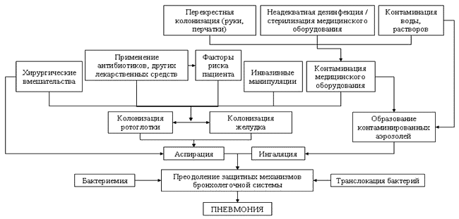

НОЗОКОМИАЛЬНАЯ ПНЕВМОНИЯ:
ПРАКТИЧЕСКИЕ РЕКОМЕНДАЦИИ ПО ДИАГНОСТИКЕ,
ЛЕЧЕНИЮ И ПРОФИЛАКТИКЕ (ПРОЕКТ)
VI. ОСНОВЫ ПАТОГЕНЕЗА
Патогенез НП является мультифакторным, причем эти факторы нередко взаимодействуют между собой (рис. 1). Как известно, нижние отделы дыхательных путей обладают собственными механизмами противоинфекционной защиты, включая местный иммунитет, мукоцилиарный клиренс, кашель и др. Как и в случаях любой пневмонии, обязательным условием развития НП является преодоление этих защитных механизмов.
Важным для понимания основ патогенеза НП является и знание соответствующих путей проникновения инфекции в нижние отделы дыхательных путей и лёгочную ткань:
- аспирация секрета ротоглотки, содержащего потенциальные возбудители НП;
- аспирация нестерильного содержимого пищевода/желудка;
- ингаляция микробного аэрозоля;
- гематогенное распространение из отдаленного очага инфекции;
- непосредственное проникновение возбудителей в дыхательные пути.
Очевидно, что патогенетическое значение упомянутых путей проникновения инфекции в дыхательные пути не равнозначно; основным является аспирация содержимого ротоглотки, контаминированного соответствующими микроорганизмами.

Рисунок 1. Схема патогенеза нозокомиальной пневмонии (M.H. Kollef, 2003)
Аспирация
Колонизация и аспирация секрета ротоглотки
Колонизация ротоглотки отдельными микроорганизмами - в их числе пневмококком, анаэробами, реже гемофильной палочкой - является универсальным процессом, наблюдаемым у здоровых людей. Напротив, колонизация ротоглотки грам(-) микроорганизмами и, прежде всего, P.aeruginosa и Acinetobacter spp., в норме встречается крайне редко. Однако вероятность орофарингеальной/трахеальной колонизации P.aeruginosa и энтеробактериями возрастает по мере увеличения продолжительности пребывания в стационаре и (или) увеличении степени тяжести заболевания. При этом вероятность развития НП у пациентов с колонизацией верхних дыхательных путей грам(-) микроорганизмами возрастает практически в 10 раз (по сравнению с пациентами без грам(-) колонизации).
Аспирация орофарингеального секрета может наблюдаться у здоровых лиц, особенно во время сна. Частота аспирации существенно возрастает при:
- нарушении сознания;
- расстройствах глотания;
- снижения рвотного рефлекса;
- замедлении опорожнения желудка;
- угнетении двигательной активности ЖКТ.
Аспирация нестерильного содержимого пищевода/желудка
Эзофагеальная жидкость содержит микроорганизмы, но желудок в норме является стерильным, прежде всего, вследствие кислой реакции его содержимого (низкие значения рН). Колонизация желудка может произойти в следующих ситуациях:
- ахлоргидрия/гипохлоргидрия;
- недостаточное питание/голодание;
- энтеральное питание;
- приём лекарственных средств, повышающих рН желудочного содержимого (антациды, H2-блокаторы, ингибиторы протонной помпы).
Рефлюкс и аспирация нестерильного содержимого желудка являются возможным механизмом проникновения возбудителей в нижние отделы дыхательных путей, однако роль этого механизма в развитии НП существенно ниже, чем аспирация секрета ротоглотки.
Выводы
- Аспирация микроорганизмов из ротоглотки, а также секрета, содержащего микроорганизмы, из области манжеты эндотрахеальной трубки являются первичными путями проникновения бактерий в нижние отделы дыхательных путей (степень доказательности II).
- К редким патогенетическим механизмам развития НП относятся ингаляция, микробного аэрозоля, непосредственное попадание возбудителей в нижние отделы дыхательных путей, гематогенное распространение микроорганизмов из инфицированных венозных катетеров, транслокация бактерий из просвета ЖКТ (степень доказательности II).
- Образование бактериальной биоплёнки в эндотрахеальной трубке с последующим формированием эмболов в дистальных отделах дыхательных путей может являться важным фактором в патогенезе ВАП (степень доказательности III).
- Желудок и синусы представляют собой потенциальные резервуары нозокомиальных патогенов, однако, их роль в возникновении НП является противоречивой (степень доказательности II).
VII. ФАКТОРЫ РИСКА НОЗОКОМИАЛЬНЫХ ПНЕВМОНИЙ
Условно можно выделить большое число факторов риска развития НП (табл. 2).
Значение отдельных факторов риска в патогенезе НП не вызывает сомнений. Одним из них традиционно считается пожилой возраст. Имеются свидетельства связи курения и его интенсивности (оцениваемой показателем «пачек/год») с вероятностью развития НП.
Недостаточное питание ассоциируется с большим риском развития НП, возможно, вследствие транслокации бактерий через поврежденный эпителий ЖКТ.
Таблица 2. Факторы риска развития нозокомиальных пневмоний
| Со стороны пациента |
|---|
- возраст;
- курение;
- заболевания органов дыхания (ХОБЛ, дыхательная недостаточность, грипп);
- прочие заболевания (сахарный диабет, почечная недостаточность, алкоголизм и пр.);
- недостаточное питание;
- кома;
- метаболический ацидоз;
- любой очаг инфекции в организме, являющийся потенциальным источником гематогенного распространения;
- плохая гигиена полости рта.
|
| Связанные с медицинскими манипуляциями |
|---|
- длительная госпитализация;
- интубация трахеи;
- медикаментозная терапия (седативные лекарственные средства, миорелаксанты, антациды, H2-блокаторы, глюкокортикоиды, цитостатики и другая иммуносупрессивная терапия);
- длительные и сложные оперативные вмешательства (особенно на органах грудной клетки и брюшной полости);
- наличие желудочного зонда и питание через него;
- использование венозных катетеров;
- энтеральное питание в положении на спине;
- перекрестное инфицирование.
|
Общеизвестно, что риск развития НП возрастает после перенесённого оперативного вмешательства. Особенно это актуально для пациентов, перенесших вмешательства на органах грудной клетки и брюшной полости, для которых характерны развитие ателектазов, а также послеоперационные боли, нарушающие мукоцилиарный клиренс. При этом относительно простые манипуляции/подходы способны существенно уменьшить риск послеоперационной пневмонии:
- адекватное обезболивание;
- регулярная физиотерапия (массаж, постуральный дренаж, дыхательная гимнастика);
- стимулирование кашля у пациентов без искусственной вентиляции лёгких (ИВЛ);
- ранняя (по возможности) активизация пациентов;
- приём пищи в полусидящем положении.
Фибробронхоскопия является самостоятельным фактором риска развития НП у пациентов, находящихся на искусственной вентиляции лёгких. Отчасти это может быть связано с тем, что продвигаемый через ротоглотку бронхоскоп вызывает колонизацию нижних отделов дыхательных путей потенциально патогенными бактериями. Продвижение бронхоскопа способствует также смещению бактерий, локализующихся на биоплёнках, выстилающих слизистую бронхов. Помимо этого, нередко большие объёмы жидкости, вводимые через бронхоскоп, затрудняют клиренс бактерий из нижних отделов дыхательных путей. И хотя связь между этой врачебной манипуляцией и колонизацией дыхательных путей не является безусловной, тем не менее, предлагается сдержанный подход к применению фибробронхоскопии у пациентов, находящихся на ИВЛ.
Применение отдельных классов лекарственных средств сопровождается увеличением риска развития НП. Так, седативные препараты увеличивают риск аспирации, снижают кашлевой рефлекс, тем самым способствуя «застою» бронхиального секрета. Наиболее демонстративны эти эффекты у лиц пожилого возраста и у пациентов с дисфагией. Применение антацидов и H2-блокаторов, назначаемых с целью профилактики стрессовых язв и желудочно-кишечных кровотечений, приводит к повышению рН содержимого желудка, способствуя тем самым бактериальной колонизации его слизистой оболочки. Применение сукральфата характеризуется меньшим риском развития ВАП.
Искусственная вентиляция лёгких
Имеются многочисленные доказательства 6-21-кратного возрастания риска развития НП у пациентов, находящихся на ИВЛ, равно как и связи между частотой НП и длительностью механической вентиляции. Нахождение эндотрахеальной трубки в дыхательных путях пациента нарушает многие защитные механизмы, а именно:
- затрудняет или полностью исключает отделение в норме образующегося бронхиального секрета посредством мукоцилиарного клиренса и кашля;
- нарушает целостность эпителиальной выстилки трахеи;
- эндотрахеальная трубка представляет собой своеобразную ловушку для секрета, локализующегося выше раздуваемой манжеты, т.е. проксимальнее трахеи. Это может привести к колонизации ротоглотки нозокомиальными бактериями и контаминированный секрет, просачиваясь между раздутой манжетой и стенкой трахеи, проникает в нижние отделы дыхательных путей.
Следует учитывать и возможность контаминации увлажнителя в контуре аппарата ИВЛ, в результате чего пациент ингалирует микробный аэрозоль.
На поверхности интубационной трубки часто образуются биоплёнки. Источниками бактерий являются поверхность кожи самого пациента, руки врача и медицинской сестры, медицинское оборудование и пр. Биоплёнки усиливают аккумуляцию бактерий и вырабатывают факторы, снижающие эффективность антибактериальной терапии. Это происходит вследствие того, что в биоплёнках более низкое напряжение кислорода и меньшее содержание железа, что предполагает анаэробный рост бактерий и меньшую скорость деления клеток. Вследствие этого, например, активность β-лактамов снижается, поскольку эти антибиотики наиболее активны в отношении делящихся клеток, а активность аминогликозидов уменьшается, поскольку эти антибиотики активны в отношении аэробных бактерий.
Особое внимание следует уделять типу эндотрахеальной трубки, её состоянию и месту введения. Введение эндотрахеальных трубок и желудочных зондов через рот является более предпочтительным по сравнению с введением через нос вследствие снижения риска развития нозокомиального синусита и, возможно, НП.
К снижению вероятности аспирации бактерий из ротоглотки приводит ограничение использования седативных и подавляющих кашлевой рефлекс препаратов, а также поддержание давления в манжете эндотрахеальной трубки выше 20 см водного столба.
Развитие ВАП также может быть связано с колонизацией контура аппарата ИВЛ. Вследствие этого, следует соблюдать осторожность при проведении аппаратной ИВЛ с целью избежания попадания конденсата в нижние отделы дыхательных путей.
Аспирация, положение пациента и энтеральное питание
Положение пациента на спине также может способствовать аспирации, что можно в значительной степени снизить путём перемещения пациента в полулежащее положение. В рандомизированном исследовании было показано трёхкратное снижение частоты НП в ОРИТ у пациентов, получавших лечение в полулежачем положении (под углом 45°) по сравнению с положением на спине (под углом 0°).
Следует отметить прямую взаимосвязь частоты развития инфекций у пациентов в положении на спине с началом энтерального питания. Вероятнее всего, это связано с увеличением риска аспирации содержимого желудка.
Интересными представляются данные о том, что при раннем энтеральном питании (например, с первого дня после интубации и начала ИВЛ) у пациентов, находящихся в критическом состоянии, при сравнении с поздним (например, на 5 день интубации), риск развития ВАП в ОРИТ был значимо выше. Метаанализ 7 исследований показал значимое снижение риска развития НП в ОРИТ при постпилорическом кормлении (относительный риск 0,76) по сравнению с желудочным.